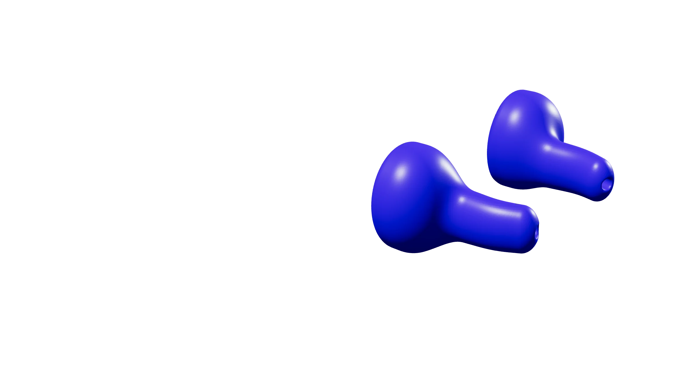
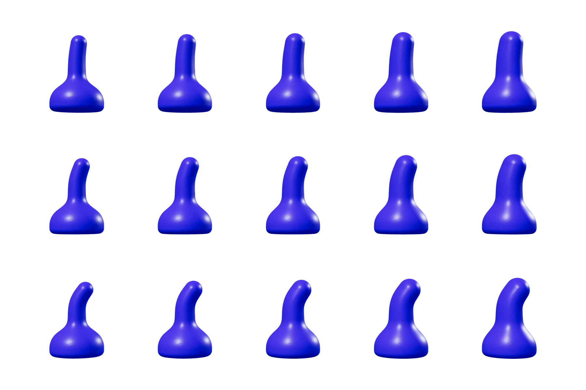
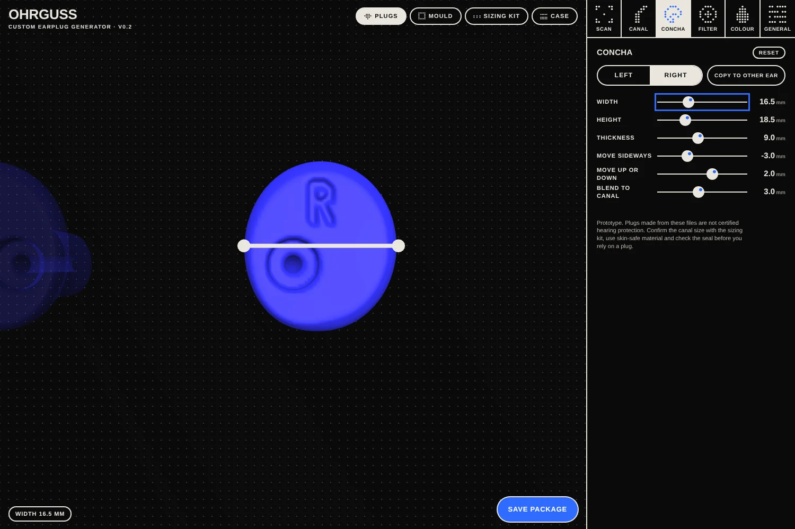
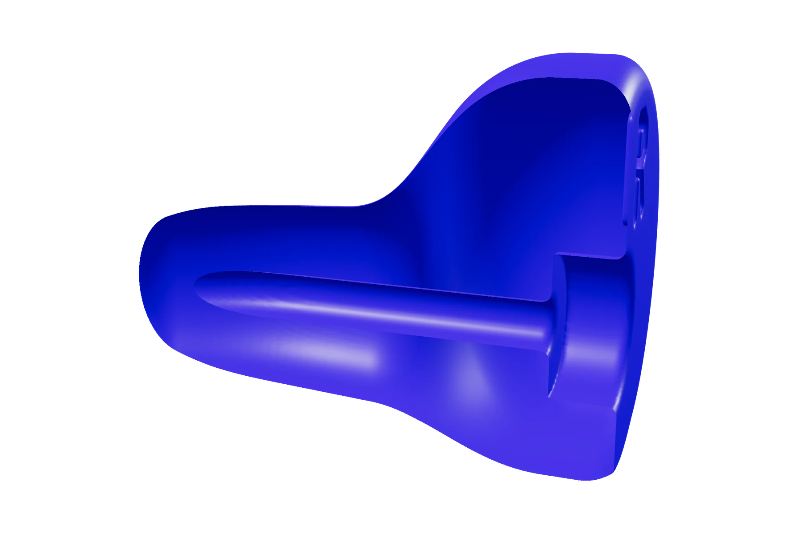
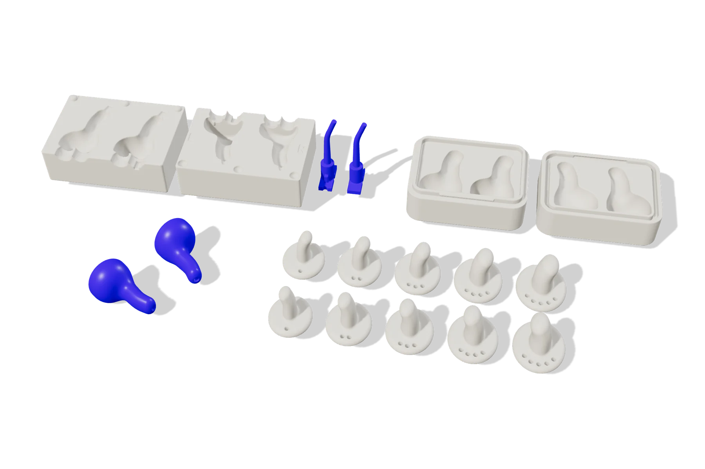

OHRGUSS
Custom-fit earplugs from a browser.
The idea
Custom-moulded earplugs fit better and are more comfortable than foam plugs, but they usually need an ear impression taken by an audiologist and a lab to make them. Ohrguss tries to make that path cheaper and more accessible: a web app designs a pair of plugs for your own ears and exports everything needed to print or cast them at home or at a local print shop.
The project supplies the tool and the open designs. It does not manufacture or sell earplugs.
My role
Placeholder: concept, research, interface and geometry of the app.
- One design for both ears
- Canal and concha are set per ear; filter, extras and colour are shared. One package holds everything for the pair.
- The canal from a library
- A phone cannot capture the ear canal well, so the canal comes from premade variants based on published measurements, checked with a printed sizing kit. The concha comes from a scan or a photo.
- Made for a filament printer
- Every part is planned for an ordinary filament (FDM) printer; the plug itself is cast in skin-safe silicone in the printed mould.
- Open, and no protection claims
- Free and open source under GPL-3.0. The files are a prototype, not certified hearing protection, and the app says so.
Concept · open source.
The app opens in a new tab, always in its latest version. It runs in desktop and phone browsers.
What it makes
How it works
From the first fitting to the print files in seven steps. Every part is built from the same plug shape, so mould, case and plug always match.
Print the sizing kit, two rows of canal gauges, one per ear: all sizes, fine size steps or bend steps. The gauge that seals comfortably sets the canal.
15 canal variants, five sizes from published ear-canal measurements times three bends, plus fine tuning for each ear.
Width, height and thickness per ear, shown as measuring bars on the model. Load a 3D scan of your ear, or a true-size photo with a coin for scale, to match the plug to your ear.
A seat and sound bore for a filter insert, shaped as a cylinder or from a 3D scan of your own filter. Or a solid plug with an optional pressure vent.
One closed two-part mould for both plugs. A separate keyed core per ear forms the filter seat and bore.
Shaped to your two plugs and clicks shut; a hinge, lanyard loop or magnets as options.
A single zip with all STL files, a readme and your design file, so you can continue on another device.




Where it stands
Version 0.2, a working prototype.
- Done: every part comes out as a closed, single-piece mesh across a range of designs, checked by automatic tests on each change; the app runs in desktop and phone browsers.
- Not tested yet: printing and casting, real ear scans, ear photos and filter scans. Tolerances for the click latch, hinge, magnets and mould cores need tuning on real printers.
- Needs a local version: true photogrammetry and a phone link by QR code; a web page cannot do the reconstruction.
- Planned: a listening fit check, plug in versus plug out, and a trademark check for the name.
Specs
- Parts
- Plugs, two-part mould with keyed cores, case, sizing kit
- Format
- STL in millimetres, one zip per design with a readme and the design file
- Printer
- Filament (FDM) as the baseline
- Plug
- Filter seat and sound bore, or solid with an optional pressure vent
- Extras
- Cord ring or removal grip, engraved L and R marks, colour for all parts
- Variants
- 15: five sizes times three bends
- Size M
- Entrance 9.4 × 6.5 mm; the five sizes span about ±20 %
- Bend
- 8°, 20° or 35°, placed 8 mm inside the entrance
- Tip
- 85 % of the entrance size, as the canal narrows inward
- Check
- Printed sizing kit with all sizes, fine size steps or bend steps
- Defaults
- Height 18.5 mm, thickness 9 mm, width 16 mm (an estimate, not a measured value)
- From a scan
- One 3D scan of the ear or head; mark each canal opening, the concha is trimmed to the skin
- From a photo
- One true-size photo per ear, with a coin for scale
- Per ear
- Left and right are set separately, or copied to the other ear
- Platform
- Desktop and phone browsers with WebGL; an offline single-file version
- Storage
- Settings stay in the browser; nothing is uploaded
- Geometry
- Signed distance functions, meshed with surface nets and Taubin smoothing, in a Web Worker
- Code
- Plain HTML, CSS and JavaScript, no build step
- Status
- Version 0.2, working prototype
- License
- GPL-3.0
- Tests
- Automatic geometry tests on every change, then publishing
- Source
- github.com/smoaf/OHRGUSS
Canal and concha values from published ear measurements; sources in the concept and research notes.
Prototype, not certified hearing protection. Plugs made from these files have no tested attenuation. Use certified hearing protection wherever protection is required, for example at work.
Pictures rendered from the app's own geometry. Texts are drafts from the project's documentation until the final ones follow.